Horlogerie · 2016 · Arc jurassien et Suisse romande
Swiss Knowhow – Sous-traitance horlogère 2016
Édition 2016 (avril 2016) de Swiss Knowhow consacrée à la sous-traitance horlogère, éditée par Com Consulting SA à La Chaux-de-Fonds. Après des entretiens avec la FH, le salon EPHJ, la Convention patronale et l'apiah, et des portraits d'initiatives pour les horlogers indépendants (WAG, SIWP, SwissCreativeLab), le magazine présente près de 80 entreprises et institutions regroupées par rubriques : machines et automation, aiguilles, assemblage, mouvements, cadrans et boîtes, bracelets, étampes, gravure, logiciels, injection plastique, formation (ceff, CEFNA, CIP, CEJEF, CFH, CIFOM, ETVJ, HE-Arc, WOSTEP), rouages, galvanoplastie et assurances, puis une série de profils de sous-traitants et un index des company profiles. Couvertures : Gilbert Petit-Jean, Blösch-Mérusa et Incabloc.
Sommaire · 76 articles

Jean-Daniel Pasche, l'autorité horlogère suprême
Défendre l'industrie horlogère, l'un des plus importants piliers économiques de la Suisse
 Interview
InterviewLe Salon EPHJ-EPMT-SMT à Palexpo du 14 au 17 juin 2016
Interview de Barthélémy Martin, Marcello Ronchietto, André Colard et Olivier Saenger
Convention patronale de l'industrie horlogère suisse (CP) : « Nous avons besoin de plus d'apprentis et d'entreprises qui créent de l'emploi »
Entretien avec Elisabeth Zölch, Présidente de la CP
L'apiah au cœur du monde horloger – Une association patronale très active
Entretien avec Marie-Thérèse Kohler Fiorellino, Secrétaire générale
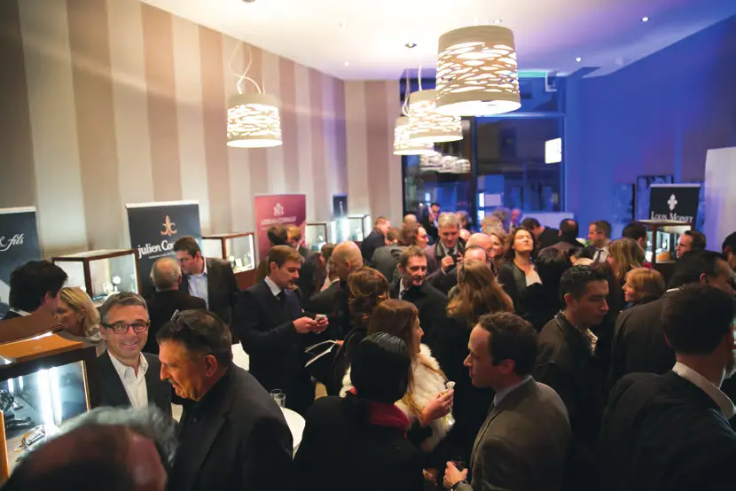
InterviewWAG, trois lettres horlogères, une galerie et... un label ?
Interview de Philippe Sitbon
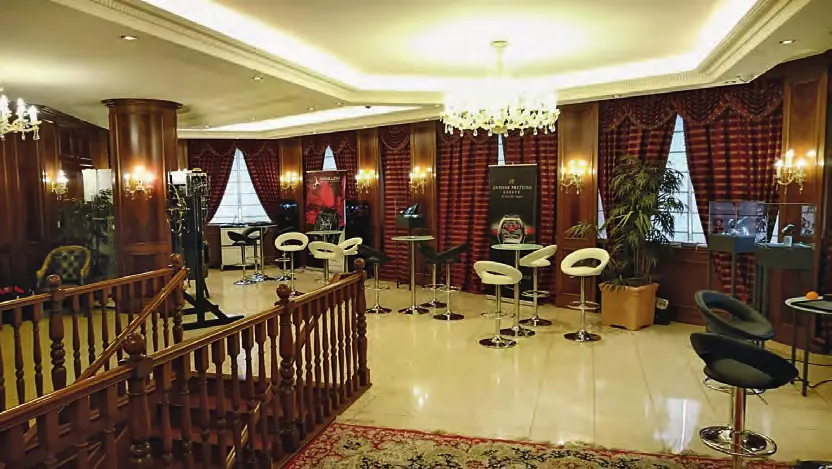
InterviewSIWP : le Casino de Genève s'ouvre aux horlogers indépendants
Interview d'Amarildo Pilo, fondateur du SIWP
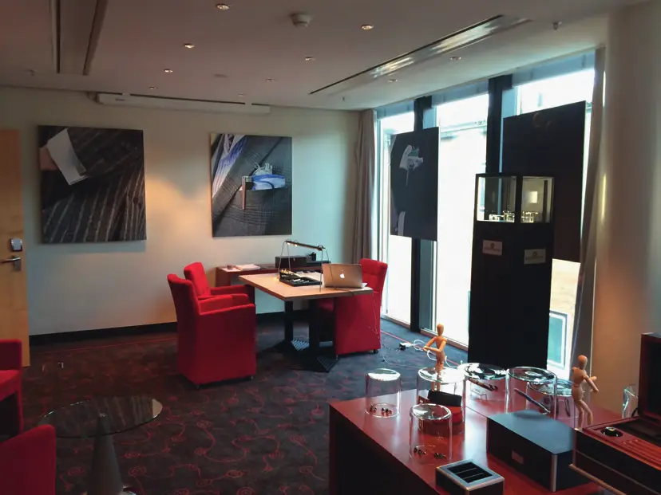
PortraitSwissCreativeLab, groupement de marques indépendantes
Portrait de Carlo Enea Naldi
 Publireportage
PublireportageComposites Busch SA – Le carbone au service de l'industrie horlogère
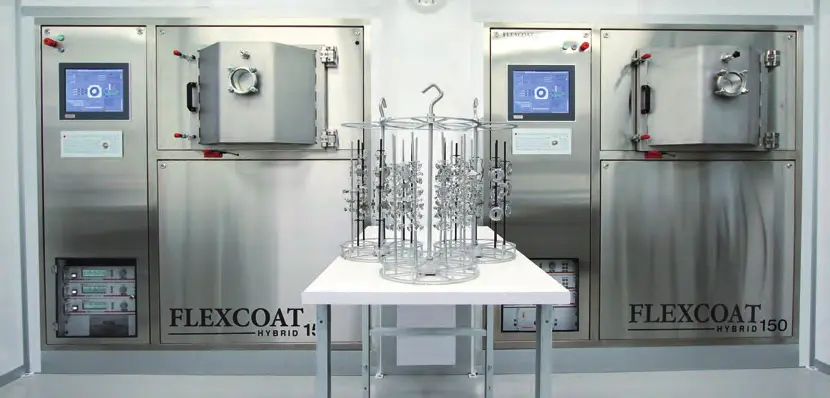
PublireportageSurcotec SA / Syvaco Sàrl – Leaders du traitement de surface sous vide
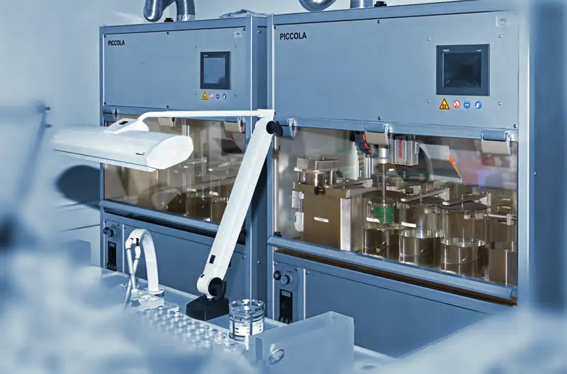
PublireportageGilbert Petit-Jean SA – Une équipe au service de la qualité
Gilbert Petit-Jean SA – Ein Team ganz im Dienst der Schweizer Qualität
Inhotec SA : l'usinage de précision au service des grandes marques horlogères
 Publireportage
PublireportageBates, la référence des consommables pour le polissage
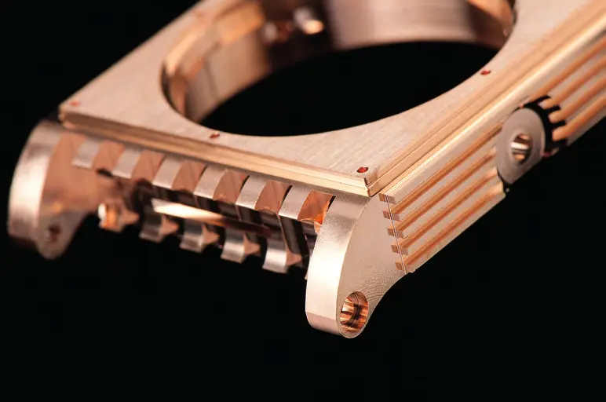
PublireportageUM2 SA – Précision extrême, qualité hors normes
Hagmann Tec SA
Flux laminaire, lavage, emballage et sous-traitance
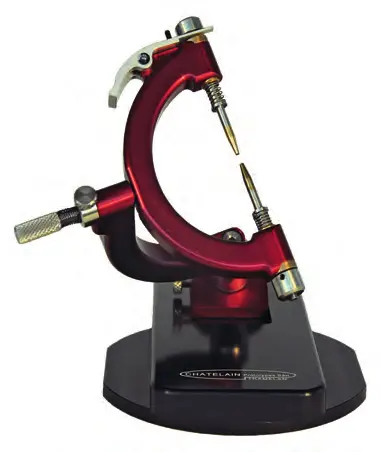
PublireportageChatelain Prototypes Sàrl – Les spécialistes du prototypage
 Publireportage
PublireportageAgosi Allgemeine Suisse SA – 125 ans d'expérience à votre service
Écouter – Comprendre – Apporter des solutions
 Publireportage
PublireportagePosalux SA – L'expert des micro-technologies et du micro-usinage de précision
Posalux SA – The micro technology and precision micro machining expert
 Publireportage
PublireportageTechnoFinish SA – La fiabilité suisse à votre service depuis 2003
PublireportageTechnoFormage SA – Des solutions pour l'emballage thermoformé et injecté
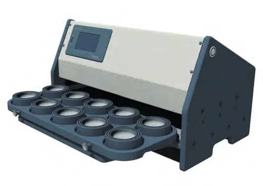
PublireportageRoxer SA – Le spécialiste et fabricant suisse de machines de test d'étanchéité de montres et d'outils horlogers
The Swiss specialist and manufacturer of leak testing machines for watches and watchmaking tools

Claude Piguet SA – Le spécialiste du moulage et de l'usinage de polyuréthane
Specialists in the moulding and machining of polyurethane
Luthy Machines SA – Le spécialiste des machines pour l'industrie horlogère
Luthy Machines SA – The machine specialist for the watchmaking industry
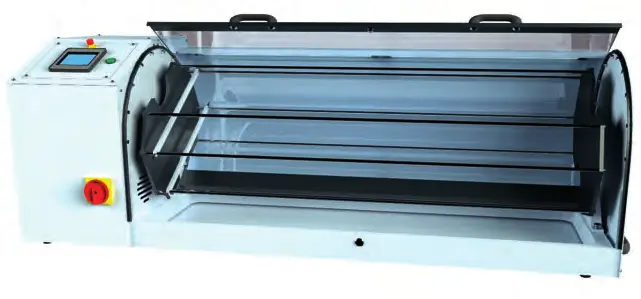
PublireportageAstuto Sàrl
Le spécialiste des machines à remonter les montres automatiques
GEPY, la précision en mouvement
Une référence pour les quills et pointes tournantes
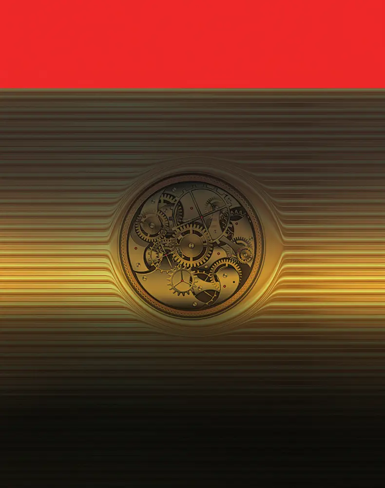
PublireportageAiguilla SA, seconde après seconde... un maître du ballet des aiguilles
Aiguilla SA, second after second... mastering the whirl of watch hands
 Publireportage
PublireportageMercier SA – Horlogers de l'ombre
PublireportagePauli Uhrenservice AG – Wo die Zeit nicht stehen geblieben ist
 Interview
InterviewMeyer Sintermetall – La métallurgie des poudres
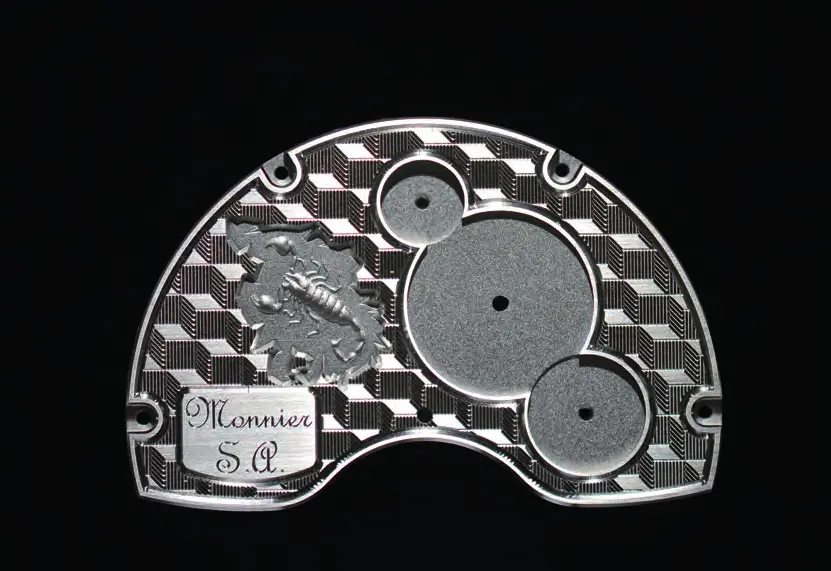
PublireportageMonnier SA – Électroplastie et décoration, une offre constamment enrichie
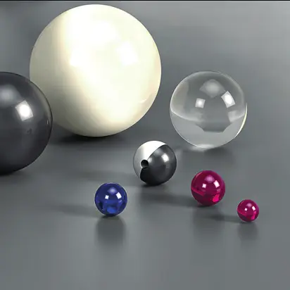
PublireportageSaphirwerk – Des solutions pour les matériaux durs
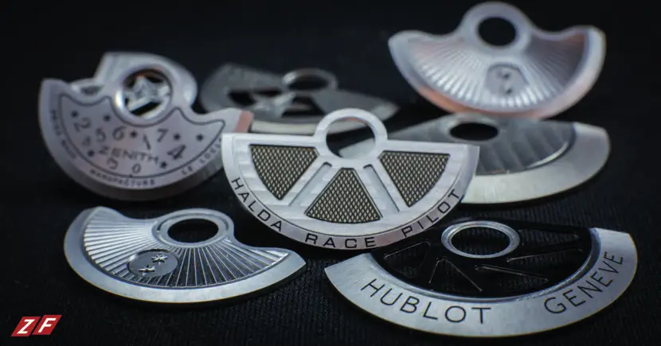
PublireportageWatch-Déco Sàrl – Le partenaire des terminaisons et du poli bloqué
Prodécor VD SA – Le spécialiste de la décoration horlogère haut de gamme
Zürcher Frères SA – Maître de la métallurgie des poudres
 Publireportage
PublireportageArteCad SA – Tous les savoir-faire sous le même toit
Guillod Gunther – De la main à la machine
Acteur historique de la sous-traitance horlogère depuis 1866
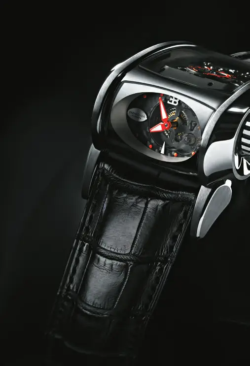
PublireportageLes Artisans Boîtiers SA – Tradition, technologie et savoir-faire artisanal
Tradition, technology and skilled craftsmanship
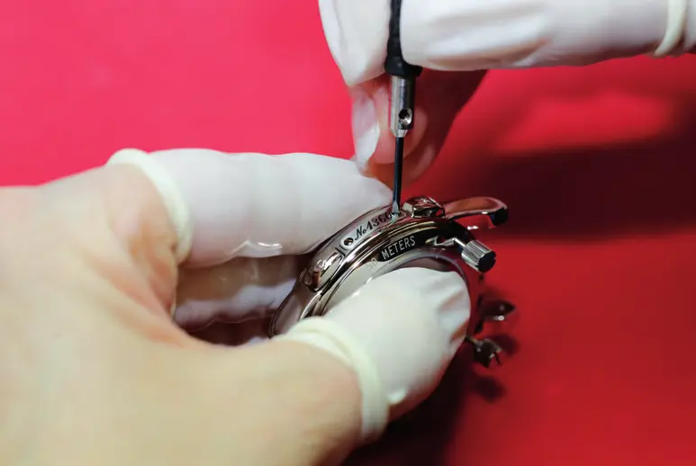
PublireportageQueloz SA – L'habillement horloger à son plus haut niveau
Queloz SA – The height of watch accessories
 Publireportage
PublireportageStettler Sapphire – La parfaite transparence
Stettler Sapphire – Perfect clarity
 Publireportage
PublireportageBrasport, 70 ans d'expérience – Le bracelet cuir, mode excellence
PublireportageOesch GmbH – Spécialiste des boucles, fermoirs et accessoires depuis 30 ans
Specialising in buckles, clasps and accessories for the last 30 years
 Publireportage
PublireportageBanda Swiss – Manufacturer of High Quality Leather Watch Straps
 Publireportage
PublireportageCompétences pointues pour le Centre de Technologies Microtechniques SA
 Publireportage
PublireportageEtampes Kaufmann SA – Le spécialiste de l'étampage et du découpage
 Publireportage
PublireportageDécors Guillochés SA – L'art du guillochage au service de l'horlogerie
 Publireportage
PublireportageMW Programmation SA – Pilotes pour commandes numériques
 Publireportage
PublireportagePierre Bercher SA – Le spécialiste de l'injection de plastique
The plastic injection specialist
PublireportageMaître Frères SA
Injection plastique, Glovelier
 Publireportage
PublireportageLe ceff INDUSTRIE, la formation à la carte pour les jeunes générations
Centre de formation professionnelle Berne francophone, Saint-Imier
PublireportageCEFNA, votre partenaire formation
Formation des adultes dans le canton de Neuchâtel
 Publireportage
PublireportageCentre interrégional de perfectionnement CIP – Au cœur de la passion horlogère
Formation pour adultes à Tramelan
 Publireportage
PublireportageCEJEF - Division technique : quatre niches de formation au cœur d'une région industrielle
Centre jurassien d'enseignement et de formation, Porrentruy
 Publireportage
PublireportageCFH : formation de pointe conforme aux attentes du marché
Centre de Formation dans le domaine de l'Horlogerie – Antonio Ciancio et Sébastien Monney
PublireportageCentre interrégional de formation des montagnes neuchâteloises – CIFOM : pour savoir vivre avec savoir-faire
Formation professionnelle et continue
 Publireportage
PublireportageEcole technique de la Vallée de Joux - ETVJ
Une offre de formation en contact avec les réalités du terrain
 Publireportage
PublireportageHaute École Arc Ingénierie – Formation et recherche appliquée au service de l'Arc jurassien
Avec Olivier Duvanel, directeur adjoint
 Publireportage
PublireportageWOSTEP – Un demi-siècle de formation horlogère suisse à l'étranger
Fondation pour la formation et le perfectionnement horlogers
 Publireportage
PublireportageRoud'hor, la passion du rouage dédiée à la Haute Horlogerie
Avec Olivier Roudeau, fondateur et président
 Interview
InterviewSTS Saulcy Traitement de Surface SA – Des professionnels à votre service
Entretien avec Frédéric Saulcy, directeur général
 Interview
InterviewTSM Compagnie d'Assurances – Partenaire historique des horlogers
Orfèvre en assurances depuis 1921 – entretien avec Édouard Fragnière, CEO
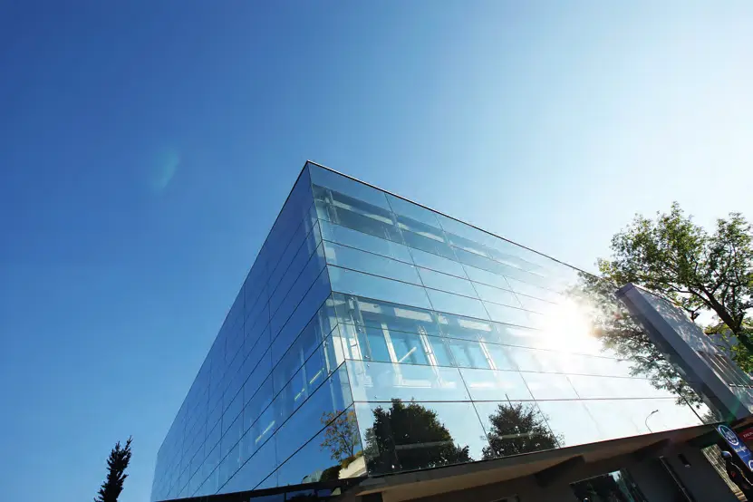
PublireportageAltmann Casting AG – Fonte de précision et 3D printing
Andreas Altmann, propriétaire et président
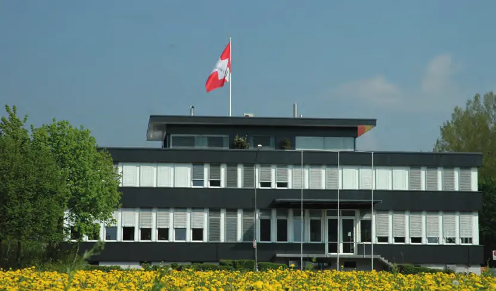
PublireportageBlösch SA - Mérusa® : le futur du cadran est en train de s'écrire
Avec Peter et Erich Blösch et Patrick Blösch
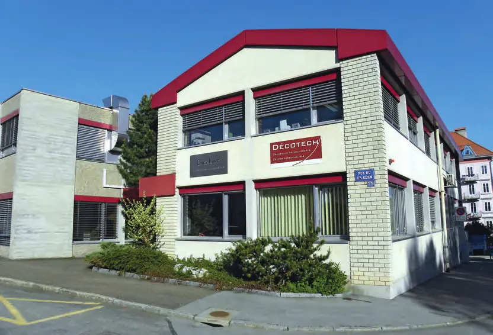
PublireportageDécotech SA – Le spécialiste de la décoration de mouvements et des décors personnalisés
La Chaux-de-Fonds
Kyburz & Cie SA – Une réputation d'excellence / Placor, la R&D au service des solutions plastiques
Produits horlogers transparents et bureau d'étude
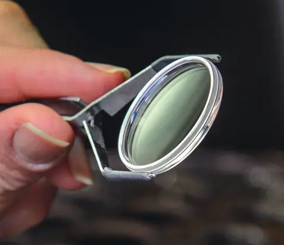
InterviewEconorm Saint-Imier
Interview mit Roland Rhyner, Inhaber
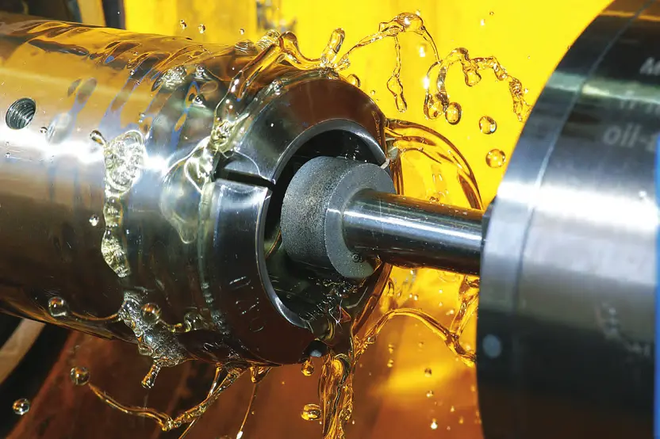
PublireportageSerge Meister SA – Des outils de précision pour l'industrie du décolletage
Court
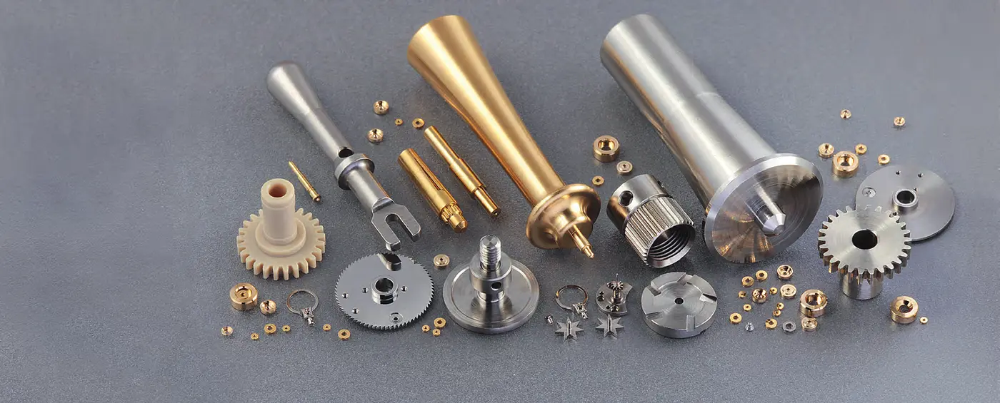
InterviewDemhosa, décolletage de précision – Du modèle virtuel à la pièce parfaite
Entretien avec Wilfred Zutter (Incabloc) et Sébastien Franz (Demhosa)
PublireportageKIF Parechoc SA – Votre partenaire dans l'art de la précision
Le Sentier, Vallée de Joux
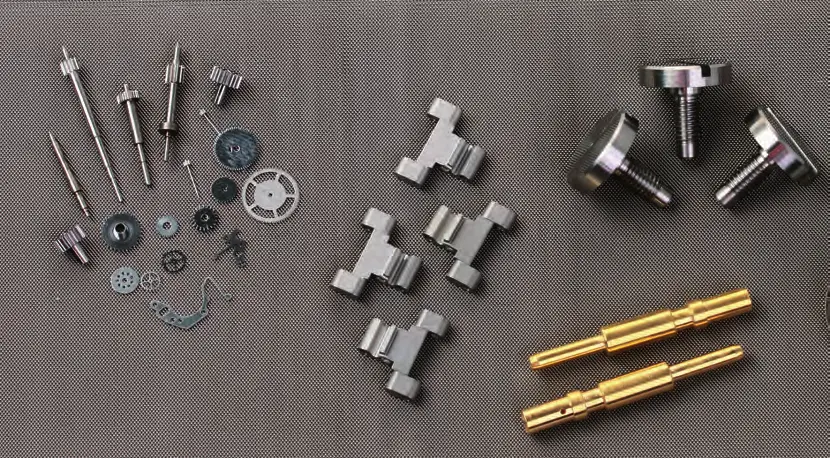
PublireportageSAFED Suisse SA – Le spécialiste des installations de traitement thermique
Avec David Salerno, directeur général
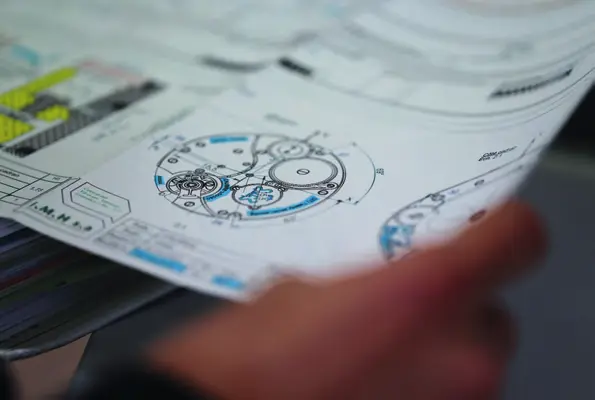
PublireportageIMH SA – Une manufacture complète au service de l'horlogerie
Innovations Manufactures Horlogères, Le Locle
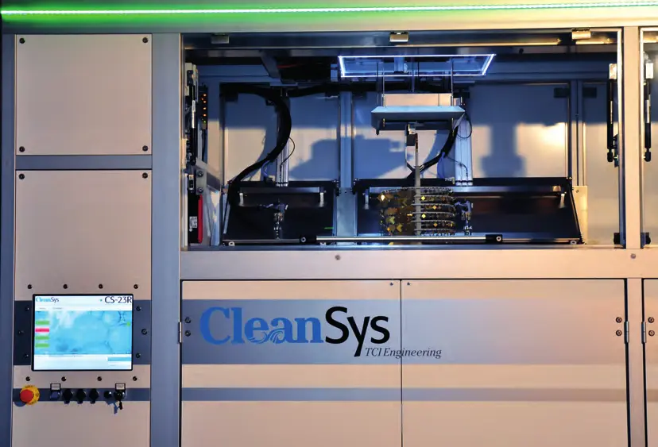
PublireportageTCI Engineering SA – Le spécialiste romand de l'automatisation industrielle
Penthaz
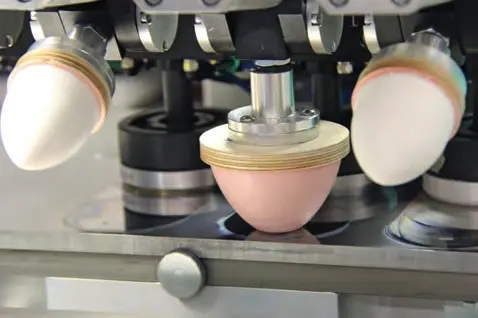
InterviewProcolor LCTI – La tampographie au service de l'horlogerie
Entretien avec Gilles Froidevaux, directeur
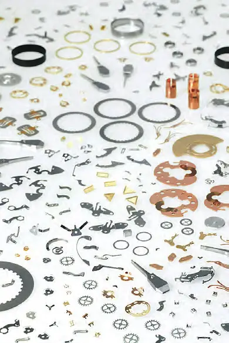
PublireportageMeylan Frères SA – Le spécialiste du découpage progressif
Le Brassus
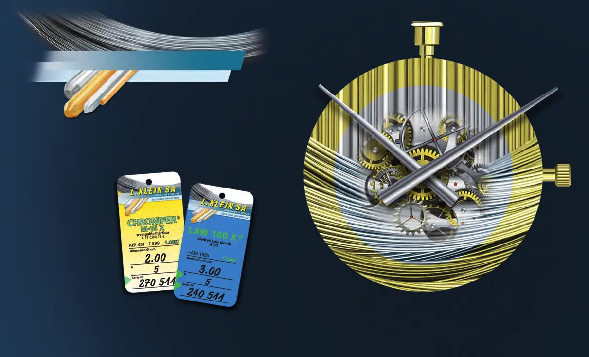
PublireportageBryek Horlogerie Sàrl
Assemblage de montres mécaniques et à quartz, La Chaux-de-Fonds
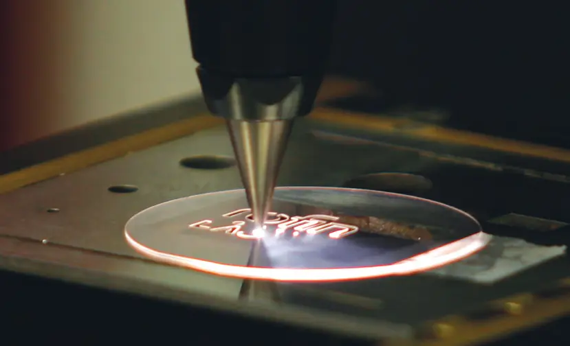
PublireportageRofin-Lasag AG – Des lasers qui vous correspondent
Laserprodukte nach Mass
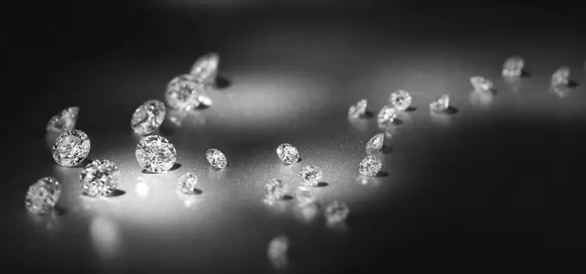
PublireportageDiafin SA – Un service personnalisé
Votre partenaire dans le choix et l'achat de diamants depuis 1992
GMG Composants – Le spécialiste des aiguilles et des index de montres
Le Locle
Entreprises de ce numéro · 82
Agosi Allgemeine Suisse SA
Métaux précieux, affinage et pièces

Aiguilla SA
Fabrication d’aiguilles de montres
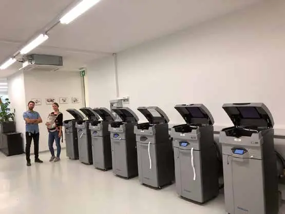
ALTMANN CASTING SA
Fonte de haute précision et prototypage rapide
apiah – Association patronale des industries de l'Arc horloger
Association patronale

ArteCad SA
Fabrication de cadrans et d'appliques
Astuto Sàrl
Machines à remonter les montres automatiques
Bates Sàrl
Consommables et machines de polissage
Blösch SA
Revêtements de surface et cadrans
Bracelets Banda SA
Bracelets de montres en cuir
Brasport SA
Bracelets cuir et petite maroquinerie

Bryek Horlogerie Sàrl
Assemblage de montres et terminage T2
ceff INDUSTRIE – Centre de formation professionnelle Berne francophone
Formation professionnelle technique
CEFNA – Centre de formation neuchâtelois pour adultes
Formation professionnelle pour adultes
CEJEF – Division technique
École technique et professionnelle
CFH – Centre de Formation dans le domaine de l'Horlogerie
Formation horlogère pour adultes

Chatelain Prototypes
Outillage horloger (potences, assistance au sertissage)

CIFOM – Centre interrégional de formation des montagnes neuchâteloises
Formation professionnelle et continue
CIP – Centre interrégional de perfectionnement
Formation continue pour adultes

Claude Piguet SA
Pièces en polyuréthane et usinage métal
Composites Busch SA
Composites hautes performances (carbone)

Convention patronale de l'industrie horlogère suisse (CPIH)
Organisation patronale et partenaire social
CTM SA – Centre de Technologies Microtechniques
Plasturgie, électroérosion, MIM et étampage
Décors Guillochés SA
Guillochage et décoration horlogère

DÉCOTECH SA
Décoration de mouvements horlogers
Demhosa (département d'Incabloc SA)
Décolletage et taillage de précision
Diafin SA
Négoce de diamants pour l'horlogerie et la bijouterie
Ecole technique de la Vallée de Joux – ETVJ
École technique
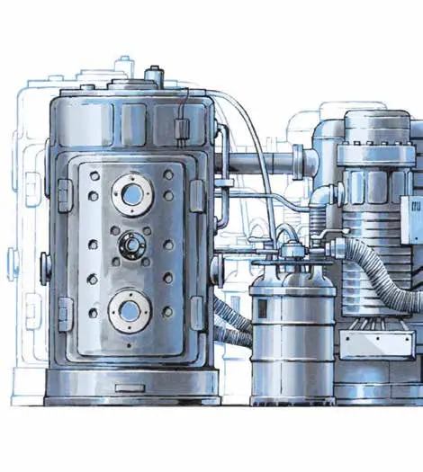
ECONORM AG
Verres saphir fonctionnels

EPHJ – Salon international de la haute précision
Salon professionnel
Etampes Kaufmann SA
Étampage et découpage

Fédération de l'industrie horlogère suisse FH
Association faîtière de l'industrie horlogère

Fondation WOSTEP
Formation et perfectionnement horloger
Froidevaux SA
Gravure chimique de clichés
GEPY-PAPAUX SA
Pointes tournantes et quills de précision

Gilbert Petit-Jean SA
Assemblage de mouvements, anglage et décoration
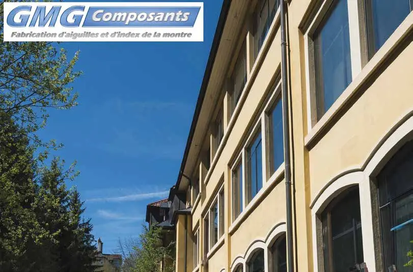
GMG Composants
Aiguilles, index et appliques
GUILLOD GUNTHER SA
Boîtes de montres et composants horlogers
Hagmann Tec SA
Flux laminaires, emballage sous blister, lavage et sous-traitance
Haute École Arc Ingénierie
Haute école d'ingénieurs
IMH SA – Innovations Manufactures Horlogères
Manufacture de composants et de mouvements

Incabloc SA
Amortisseurs de chocs et composants horlogers

INHOTEC SA
Composants et ébauches horlogers

KIF Parechoc SA
Antichocs, raquetterie et décolletage de précision

Klein AG
Aciers fins et métaux
Kyburz & Cie SA
Produits horlogers transparents (verres, décorations)
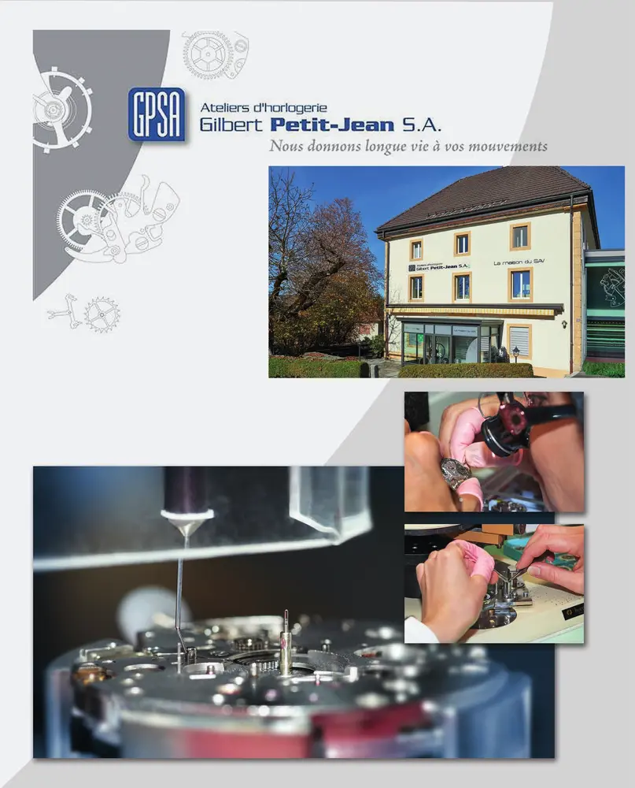
Le futur du cadran (annonceur)
Cadrans

Les Artisans Boîtiers SA
Boîtes de montres très haut de gamme
Luthy Machines SA
Négoce de machines-outils
Maître Frères SA
Injection plastique et moules
Mercier SA
Assemblage de mouvements et de montres
Mérusa SA
Manufacture de cadrans de luxe

Meyer Sintermetall AG
Métallurgie des poudres et métal lourd fritté

Meylan Frères SA
Étampage progressif de précision

Monnier SA
Électroplastie et décoration horlogère

MW Programmation SA
Logiciels CFAO et services de commande numérique

Oesch GmbH
Distribution d'accessoires métalliques pour bracelets cuir et écrins
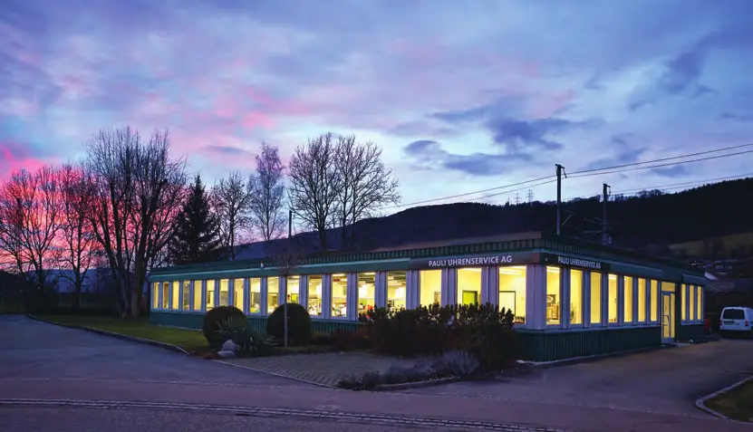
Pauli Uhrenservice SA
Montage, révision et réparation de montres
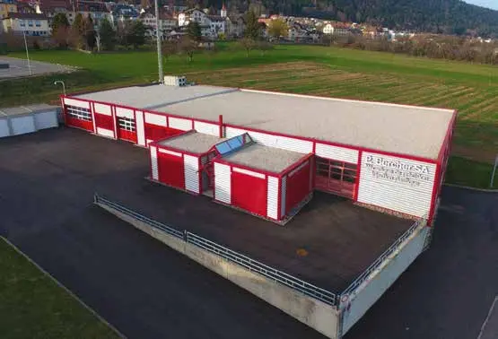
Pierre Bercher SA
Injection plastique de pièces techniques horlogères
Placor SA
Bureau d'étude en solutions plastiques

Polirapid Swiss SA
Fabrication de brosses techniques
Posalux SA
Machines-outils de micro-usinage
Procolor LCTI Sàrl
Tampographie horlogère
Queloz SA
Boîtes de montres haut de gamme
Rofin-Lasag AG
Lasers industriels
Roud'hor SA
Fabrication de rouages horlogers
Roxer SA
Machines de test d'étanchéité et outils horlogers
SAFED Suisse SA
Installations de traitement thermique
Saphirwerk AG
Usinage de matières dures (saphir, céramique, pierres)

Serge Meister SA
Serrages de précision pour décolleteuses
SIWP Swiss Independent Watchmaking Pavilion
Exposition d'horlogers indépendants
Stettler Sapphire AG
Composants techniques en saphir et glaces de montres
STS Saulcy Traitement de Surface SA
Galvanoplastie horlogère
SURCOTEC SA
Traitements de surface sous vide (PVD, CVD) et analyses MEB
SwissCreativeLab
Plateforme commune de marques indépendantes
SYVACO Sàrl
Revêtements DLC et machines de dépôt sous vide
TCI Engineering SA
Automatisation industrielle

TechnoFormage SA
Emballages thermoformés et injectés

TSM Compagnie d’Assurances
Assurance transport et risques spéciaux
UM2 SA
Usinage de précision et terminaison de pièces complexes
WAG Watches Art Gallery
Association culturelle et label d'art horloger
Watch-Déco Sàrl
Mécanique horlogère, décolletage et terminaisons
Zürcher Frères SA
Métallurgie des poudres et masses oscillantes
Aucun résultat.